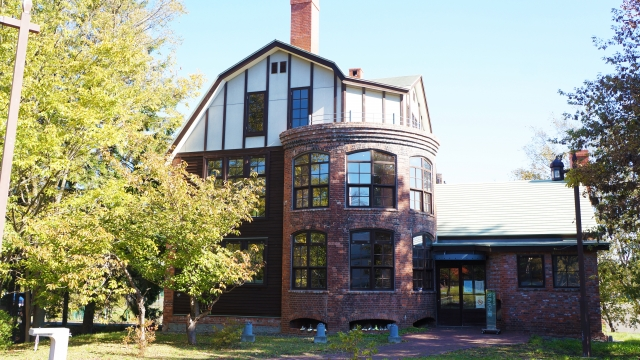
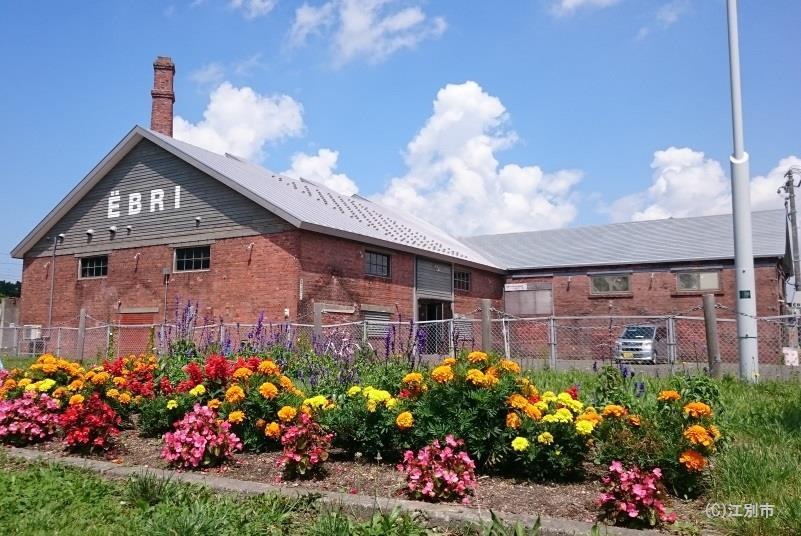

駅の紹介
- 野幌駅（のっぽろえき）は、北海道江別市野幌町にある北海道旅客鉄道（JR北海道）函館本線の駅です。
- 駅番号はA07。電報略号はノツ。事務管理コードは▲130128。
- かつては夕張鉄道との乗換駅であり、急行「かむい」も停車していた。
周辺施設
江別市ガラス工芸館
レンガ産業に長い歴史を持つ江別の象徴として、レンガ造りの建物を保存し、ガラス工芸作家の工房として活用するため平成6年4月21日に開館しました。 ガラス工芸館では、ガラス工芸作家 柿崎均さんの作品制作の様子が見学できるほか、作品の鑑賞、柿崎さんの作品の購入、作品づくり体験ができます。

ËBRI
ËBRIはEBETSU（江別）とBRICK（レンガ）の造語から生まれた名称です。江別のレンガは、江別の土100％のみで生成される産物です。 三次的に生まれる人とのつながり、食文化、ライフスタイルをつくる拠点として、ËBRIは江別の人との交流・江別の新商品開発・地元市民があつまる拠点を目指し、 江別を原点に“つくる”を集めた、Makers（つくる） Factoryとして新たな歴史を歩み始めています。

アクセスと時刻表
アクセス
- 札幌駅からJRで約20分
- 新千歳空港からJRで約1時間
- 江別市からJRで約5分
時刻表
| JR北海道 | |||
|---|---|---|---|
| 札幌・函館駅方面 | 岩見沢・旭川駅方面 | ||
| 05 | 38 | 05 | |
| 06 | 184356 | 06 | 243554 |
| 07 | 08203139485358 | 07 | 16344752 |
野幌駅北口からのバス
- 江別２番通線[北海道中央バス]
- 野幌見晴台線[北海道中央バス]
- 新24/新28他：大麻団地線〔大麻駅方面〕[JR北海道バス]
- 新25/新26他：江別線[JR北海道バス]
- 江92/広91：共栄線[JR北海道バス]
駅に関するご意見・ご質問
ご意見・ご質問がある方は、以下の欄にご記入の上、送信してください。